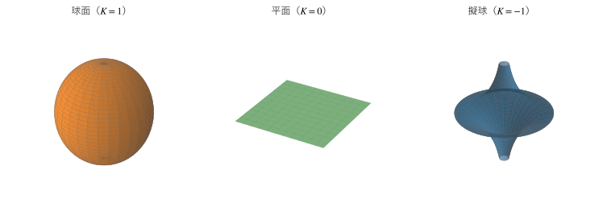

第 2 章 曲率と 3 つの幾何学
第 1 章では、双曲幾何学を公準の取り替えとして紹介した。この章では、もう 1 つの見方として、双曲幾何学を「曲率が負の面の上の幾何学」と捉える。曲率が正の面（球面）、0 の面（平面）と並べると、3 つの幾何学の違いが 1 つの数（曲率）で整理できる。
面の曲がり方とガウス曲率
曲面がどれだけ、どのように曲がっているかを表す量にガウス曲率がある。厳密な定義は微分幾何学に譲り、ここでは直観的な説明にとどめる。
曲面上の 1 点で、その点の法線を含む平面で曲面を切ると、切り口に曲線ができる。法線のまわりに平面を回すと、切り口の曲率（曲線の曲がり具合、曲率半径の逆数）が変わる。その最大値と最小値を \(\kappa_1\)、\(\kappa_2\) とし、曲面がどちらに曲がるかで符号を付けると、ガウス曲率は
である。
球面では、どの向きに切っても同じ側に曲がるので \(K > 0\) である。半径 \(R\) の球面では \(K = 1/R^2\) になる。
平面と円柱面では、少なくとも 1 つの向きに曲がらないので \(K = 0\) である。
馬の鞍（くら）の中央や、ポテトチップスのような面では、ある向きには上に、別の向きには下に曲がるので \(K < 0\) である。
ガウスは、ガウス曲率が面の中だけの測定（長さと角度の測定）から決まることを示した（驚異の定理）。紙を丸めて円柱にしても、紙の上の長さは変わらないので、円柱面の曲率は平面と同じく 0 である。一方、球面の地図を、長さを変えずに平面の紙に描くことはできない。曲率は、面に住む生き物が自分の世界の中で測定できる量であり、面が外の空間にどう置かれているかにはよらない。
双曲平面とは、ガウス曲率がどこでも同じ負の値（本書では \(-1\)）をとる、境界のない完備な面である。
3 つの幾何学の比較
曲率が一定の面は、曲率の符号によって次の 3 種類に分かれる。
\(K > 0\)：球面幾何学（大円を直線とみなす）
\(K = 0\)：ユークリッド幾何学
\(K < 0\)：双曲幾何学
\(K = 1, 0, -1\) の場合を比べると、表 4のようになる。双曲平面の欄の公式は、第 4 章から第 7 章で順に導く。
性質 |
球面（\(K = 1\)） |
平面（\(K = 0\)） |
双曲平面（\(K = -1\)） |
|---|---|---|---|
直線の外の 1 点を通る平行線 |
存在しない |
ちょうど 1 本 |
無数にある |
三角形の内角の和 |
180 度より大きい |
180 度 |
180 度より小さい |
三角形の面積 \(A\) と内角 \(\alpha, \beta, \gamma\) |
\(A = \alpha + \beta + \gamma - \pi\) |
内角だけでは決まらない |
\(A = \pi - (\alpha + \beta + \gamma)\) |
半径 \(r\) の円周 |
\(2\pi \sin r\) |
\(2\pi r\) |
\(2\pi \sinh r\) |
半径 \(r\) の円の面積 |
\(2\pi (1 - \cos r)\) |
\(\pi r^2\) |
\(2\pi (\cosh r - 1)\) |
直角三角形の斜辺 \(c\) |
\(\cos c = \cos a \cos b\) |
\(c^2 = a^2 + b^2\) |
\(\cosh c = \cosh a \cosh b\) |
面の大きさ |
有限（面積 \(4\pi\)） |
無限 |
無限 |
表から、球面と双曲平面の公式が、\(\sin\) と \(\sinh\)、\(\cos\) と \(\cosh\) を入れ替えた形になっていることが分かる。これは偶然ではなく、\(\sinh x = -i \sin(ix)\)、\(\cosh x = \cos(ix)\) の関係を通じて、双曲平面が「半径が虚数 \(i\) の球面」とみなせることの表れである（第 3 章の双曲面モデルで、この見方を具体化する）。
また、半径 \(r\) が小さいときは、\(\sin r \approx r\)、\(\sinh r \approx r\) なので、どの面でも円周は \(2\pi r\) に近い。小さな範囲では、曲率の影響は目立たない。地球が丸いことに日常生活で気付きにくいのと同じである。曲率の違いは、図形が大きくなるほどはっきり現れる。
注釈
ユークリッド幾何学では、三角形の面積は内角だけでは決まらない（相似な三角形はいくらでも大きくできる）。球面と双曲平面では、面積が内角だけで決まる。これは、曲率が長さの「自然な単位」を与えているからである。
曲率が一定の曲面の例
図 2に、曲率がそれぞれ正、0、負で一定の曲面を示す。


図 2 曲率が一定の曲面。左から球面、平面、擬球
サンプルの全体：ch02_surfaces.py
右の擬球は、牽引曲線（トラクトリクス）と呼ばれる曲線を軸のまわりに回転させた面であり、ガウス曲率がどこでも \(-1\) である。パラメーター \(u \ge 0\)、\(0 \le v < 2\pi\) を使うと
と表せる（図では、\(z\) 軸について対称な下半分も描いている）。ベルトラミは、この面の上の幾何学が双曲幾何学の一部を実現することを示した（第 1 章）。
しかし擬球は、双曲平面の全体ではない。
赤道にあたる縁（\(u = 0\)）で面がとがっており、その先へ延長できない。
軸のまわりを 1 周すると元に戻るので、双曲平面を細長く切り取って丸めたものにあたる。
実は、双曲平面の全体を、長さを変えずに 3 次元のユークリッド空間の中に滑らかな曲面として置くことはできない（ヒルベルトの定理、1901 年）。曲率が負の面は、広がるにつれて面積が急速に増え（第 7 章）、3 次元空間の中に収まりきらなくなるのである。編み物でかぎ針編みの目を一定の割合で増やすと、縁がどんどん波打つ「双曲平面の模型」ができるが、これも双曲平面の一部にすぎない。
そこで、双曲平面の全体を扱うには、平面の一部（円板や半平面）を使い、長さの測り方を変えて双曲平面を表す方法をとる。これが次の章で扱うモデルである。
この章のまとめ
曲率が一定の面の幾何学は、曲率の符号によって球面幾何学、ユークリッド幾何学、双曲幾何学の 3 種類に分かれる。
双曲平面の公式は、球面の公式の \(\sin\)、\(\cos\) を \(\sinh\)、\(\cosh\) に替えた形になる。
小さな図形では曲率の影響は目立たず、大きな図形ほど違いが現れる。
双曲平面の全体は 3 次元空間に滑らかに置けないので、モデルを使って表す。